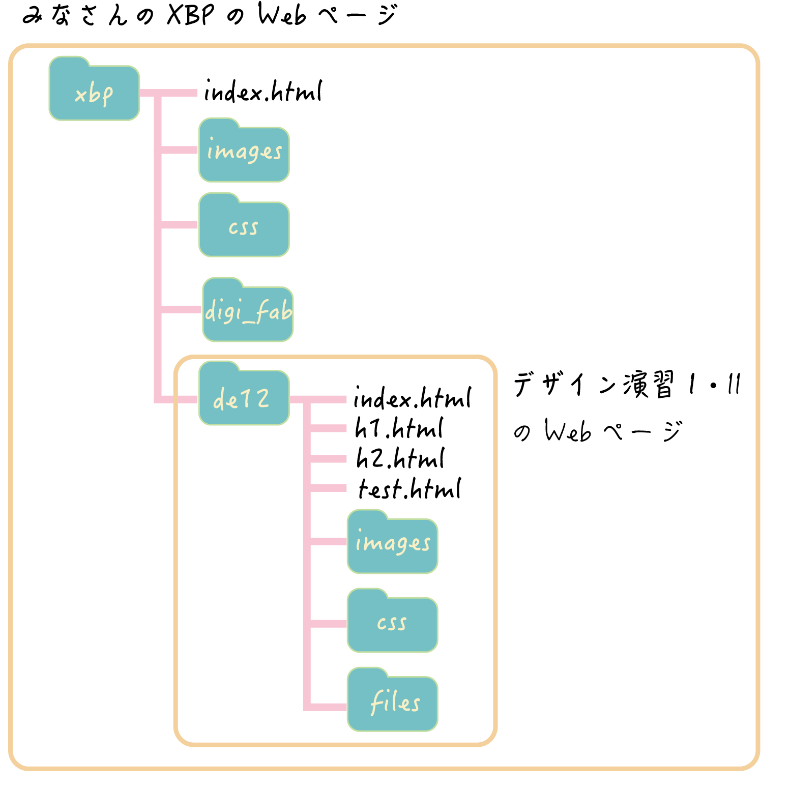

<!DOCTYPE html>
<html lang="jp">
<head>
    <meta charset="UTF-8">
    <title>htmlに関して②</title>
    <link rel="stylesheet" href="../../css/style.css">
    <link rel="shortcut icon" href="images/xbp.ico">
</head>
<body>
    <logotohome>
        <a href="../index.html"></a>
    </logotohome>

    
    <h1>1.XBP用のホームページを作成</h1>
        <h2>XBPのHPの構成</h2>
        <div>
            ブートキャンプでホームディレクトリの中にmygitフォルダを作り、その中にxbpフォルダを作りました。<br>
            デザイン演習Ⅰ・Ⅱフォルダ(de12)の中を編集していきます。<br><br>

            ■BootCampで作ったフォルダ<br>
            ホームディレクトリ<br>
            &emsp;&emsp;&emsp;&emsp;&emsp;&emsp;&emsp;&emsp;|---mygit<br>
            &emsp;&emsp;&emsp;&emsp;&emsp;&emsp;&emsp;&emsp;&emsp;&emsp;&emsp;|---xbp<br><br><br>
            
            
            
                        
            
        </div>
        <h2>トップページはindex.html</h2>
        <div>
            例えば、<br>
            https://kuxbp.github.io/xbp/xbp2021/design_e12/
            <br>
            というURLをブラウザに入力すると、その階層にあるindex.htmlを表示させます。
    
        </div>
       

    <h1>２.テストページを編集してみる</h1>
    <div>test.htmlを編集していきます
        <h2>Work①文字を書く</h2>
            <div>
                ■Work①：test.htmlに文字を書いてLive Serverで確認してみましょう。(<a href="https://youtu.be/DpFo8xBrLMc">動画:Live Serverの使い方)</a><br><br>
                段落など、塊ごとにdivタグで括るようにして、文字を書いていきましょう。<br>
                divはdivision（分割）の略です。<br>
                <xmp>
                    <div>
                        ああああああ
                    </div>
                </xmp>
                改行はbrタグを使います。
                <xmp>
                    <div>
                        ああああああ<br>
                        12345678<br>
                        いいいいいい
                    </div>
                </xmp>
            </div>
            <h2>Work②画像の挿入</h2>
            <div>
                ■work②:test.htmlにimagesフォルダにあるtest.pngを挿入してみましょう<br><br>
                画像の表示にはimgタグを使います。（imageの略）<br>
                imgタグのsrcという属性にファイルパスを記載します。(srcはsourceの略です)<br>
                width属性は幅を設定します。%で指定するとスクリーンに対して何%の幅にするかを指定できます<br>
                【書き方】
                <xmp>
                    画像を表示(30%)<br>
                    <br>
                    画像を表示(40%)<br>
                    <br>
                </xmp>

            </div>
            <div>
            画像を表示(30%)<br>
            <br>
            画像を表示(40%)<br>
            <br>
            
            </div>
            <h3>画像サイズに関する注意</h3>
            <diV>
                スマホやデジカメで撮影した写真は綺麗に印刷できるように、すごく解像度が高く、サイズが大きくなっています。<br>
                しかし、HPで表示するにはそれほどの大きなサイズは必要なく、むしろサイズが大きいと表示に時間がかかります。<br>
                今後写真をGitHubにプッシュする場合は写真のサイズを1MB(1024KB)以下に落としてください。<br>
                Macでの写真サイズの変更方法(<a href="https://doyodoyo.github.io/doyolab/03photomemo.html" target="_blank">doyolab</a>)<br>
                Windowsでの写真サイズの変更方法(<a href="https://office-hack.com/windows/windows10-image-resize/" target="_blank">外部サイト</a>)

            </diV>

            <h2>Work③箇条書き</h2>

            <div>
                ■work③:test.htmlに何か箇条書きをしてみましょう<br><br>
                番号付きの箇条書きはolタグ(ordered listの略です)<br>
                各項目はliタグで括ります（listの略です)<br>
                【書き方】
                <xmp>
                    <ol>
                        <li>ああああああ</li>
                        <li>いいいいいい</li>
                    </ol>
                </xmp>
                【結果】
                <ol>
                    <li>ああああああ</li>
                    <li>いいいいいい</li>
                </ol>
            </div>
            <div>
                番号なしの箇条書きはulタグ(Unordered listの略です)
                【書き方】
                <xmp>
                    <ul>
                        <li>あああああ</li>
                        <li>いいいいいいい</li>
                    </ul>
                </xmp>
                【結果】
                <ul>
                    <li>あああああ</li>
                    <li>いいいいいいい</li>
                </ul>
            </div>
            <h2>Work④リンク</h2>
            <div>
                ■work④:test.htmlにリンクを作成してみましょう。<br><br>
                リンクを作りたい時はaタグを使います(Anchorの略です)<br>
                href属性にリンク先を記載します(hypertext referenceの略です)<br>
                target属性に_blankを設定すると新しいタブでリンクが開きます。設定しないと、同じタブ<br>
                【書き方】
                <xmp>
                    <a href="index.html">デザイン演習Ⅰ・Ⅱトップページ</a><br>
                    <a href="../index.html">XBPトップページ</a><br>
                    <a href="https://www.yahoo.co.jp/" target="_blank">Yahoo</a><br>
                    <a href="files/test.pdf" target="_blank">pdfファイル</a>

                </xmp>
                【結果】<br>
                <a href="index.html">デザイン演習Ⅰ・Ⅱトップページ</a>→同じ階層（フォルダ）にあるindex.htmlに移動<br>
                <a href="../index.html">XBPトップページ</a>→「../」はひとつ上の階層を意味する。<br>
                <a href="https://www.yahoo.co.jp/" target="_blank">Yahoo</a>→新しいタブでyahooを開く<br>
                <a href="files/test.pdf" target="_blank">pdfファイル</a>→filesフォルダのtest.pdfを新しいタブで開く<br>
            </div>
            <h3>外部サイトに関して</h3>
            <div>
                外部サイトにリンクを貼る場合は自分のサイトではないことを、明記しましょう。
            </div>
            <h3>動画に関して</h3>
            <div>
            動画ファイルは重いので、絶対にGitHubにプッシュしないでください。最悪、リポジトリが壊れます。<br>
            動画を表示したい場合は、動画をYouTubeにアップして、そこにリンクを貼るか、htmlに埋め込むコードを発行して、htmlファイルに貼り付けましょう。<br>
            参考：<a href="https://support.google.com/youtube/answer/171780?hl=ja" target="_blank">YouTubeヘルプ</a>
            </div>
            <h2>Work⑤タイトル</h2>
            <div>
                ■work⑤:test.htmlのheadの部分のtitleを自分なりのタイトルに変更してみましょう。<br><br>
                【書き方】
                <xmp>
                    <title>XBPのページ</title>
                </xmp>
                【結果】
                ブラウザのタブの表示を確認してください。
            </div>

            <h2>Work⑥スタイルシートの設定</h2>
            <div>
                <br>cssファイルはhtmlのいろんな書式を決めておいて、それを読み込めばタグごとの書式が反映されるファイルです。<br>
                ■work⑥:headの部分でcssフォルダにあるstyle.cssをスタイルシートに設定してみましょう。<br><br>
                h1.htmlからある行をコピペしてくればOKです<br>
                
                <br>スタイルシートの読み込みがうまくいけば、test.htmlの背景や右側の余白が整うはずです。
                <br><br>
                <xmp>
                    <link rel="stylesheet" href="css/style.css">
                </xmp>
                【結果】
                背景や右側の余白が整うはずです。
            </div>
            <h2>Work⑦GitHubに反映させる</h2>
            <div>
                GitHubに反映させてください<a href="https://qiita.com/doyodoyo/private/45179a855e021dd2cb70">ここを参考</a><br>
            </div>
            
            <br><br><br><br>
            <h2>Assignment(今回の課題)</h2>
            <h3>ドキュメンテーションと公開</h3>
            <div>
                ■ 1.htmlというファイルを作ってください（test.htmlをコピーすると簡単です。)<br>
                ■de12フォルダの直下にあるindex.htmlの演習ノートの下に番号なし箇条書きで、「第1回」と記述し、1.htmlにリンクさせてください。<br>
                イメージはこのような感じです。<br>
                <iframe width="560" height="315" src="https://www.youtube.com/embed/QmtEP_GOFp0" title="YouTube video player" frameborder="0" allow="accelerometer; autoplay; clipboard-write; encrypted-media; gyroscope; picture-in-picture" allowfullscreen></iframe>
                <br><br>

                ■1.htmlに最低下記のことを調べて、画像やリンクなどを交えて、わかりやすくドキュメンテーションしてください。
                <ol>
                    <li>gitに関して</li>
                    <li>htmlに関して</li>
                </ol>
                ※注意点
                <ul>
                    <li>メモではなくドキュメント（他人が読んで伝わるように、他人にとって有益である）</li>
                    <li>理解したことを全て書く（書いていないことは理解していないと判断されます)</li>
                    <li>人間は必ず忘れるので、自分への教科書のつもりで書く</li>
                    <li>疑問に思ったことは、自分で調べて必ず載せる（授業で説明したことはごく一部）</li>
                    <li>自分なりに解釈した内容を図を載せると良い（スケッチして写真で撮ると楽）</li>
                    <li><a href="http://fab.academany.org/2018/labs/fablabkamakura/students/daisuke-doyo/" target="_blank"> 例 ：道用のドキュメント</a>：ニール・ガーシェンフェルド（MIT教授：ファブラボを作った人）の講座を受講した際もの</li>
                </ul>

                ■GitHubにプッシュして公開してください<a href="https://qiita.com/doyodoyo/private/45179a855e021dd2cb70">ここを参考</a><br>
                <br><br>

            </div>
            <h3>余裕のある人</h3>
            <div>
                
                
                ■余裕のある人は、cssなどスタイルをインターネットなどを調べて自分なりのデザインに変更してみてください。<br>(フリーのフォーマットを使ってもOK.クレジットの表示などルールは守りましょう)<br>
                <br>
                例）３年生のプロジェクトページ<br>
                <a href="https://kenshin-tanno.github.io/doyolab/" target="_blank">例１</a>、 <a href="https://nana-2525.github.io/doyolab/" target="_blank">例２</a>、 <a href="https://onomiyu.github.io/doyolab/" target="_blank">例３</a>、 <a href="https://tsunee-x.github.io/doyolab/" target="_blank">例４</a>

                
                
                <br>
                注意:みなさんの課題を見つけられなくなるので、デザイン演習Ⅰ・Ⅱのトップページのデザインは箇条書きや画像リンクで各回のページに飛ぶようにしてください。
                
               
                <br><br>
                ■digi_fabというフォルダはデジタルファブリケーション用HPのフォルダです。デジタルファブリケーションのHPもおしゃれにしておきましょう。<br>
                （デジタルファブリケーションの宿題）
            </div>

    </div>
    
<br>
<br>


</body>
</html>